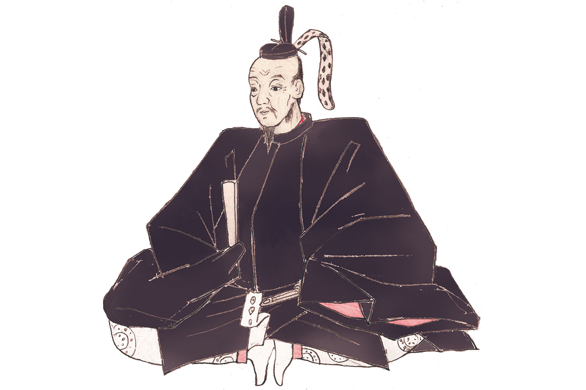
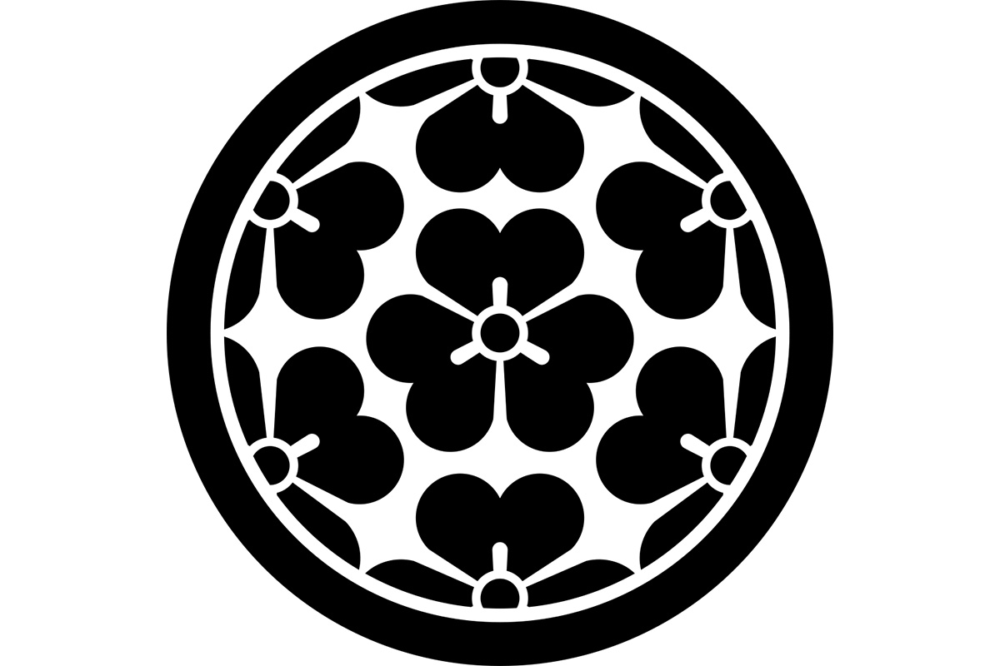
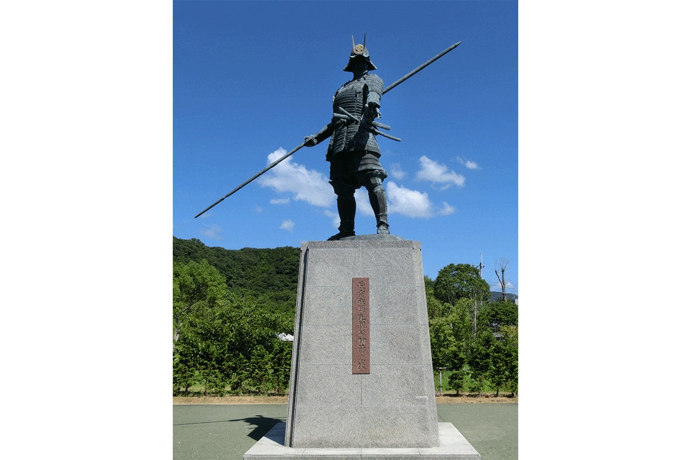

Префектура Коти · Тоса · история
Мототика Тёсокабэ: правитель Тоса, которого не оценил Нобунага

К XVI веку Япония распалась на враждующие уделы, и каждый военачальник мечтал о большем. Мототика Тёсокабэ (1539–1599), даймё провинции Тоса на юге Сикоку, почти подчинил себе весь остров. Он перешёл дорогу двум будущим объединителям Японии, Оде Нобунаге (1534–1582) и Тоётоми Хидэёси (1537–1598), и всё же удержал за собой Тоса.
С конца XV до конца XVI века в Японии шли войны. Сёгунат Муромати полностью потерял власть, и вместо наместников силу набирали военачальники на местах. Эпоха Сэнгоку оставила особенно много легендарных имён. В этой галерее мы рассказываем о Мототике Тёсокабэ, который нажил неприязнь Нобунаги, но показал твёрдую руку в управлении.
Мототика Тёсокабэ
- Годы жизни
- 1539–1599
- Место
- провинция Тоса (префектура Коти)
- Род
- Тёсокабэ (ветвь рода Хата)
- Имена
- Ясабуро (детское), Мототика
- Жена
- дочь Мицумасы Исигаи (единоутробная сестра Тосимицу Сайто)
- Наложница
- Косёсё, дочь Киёмунэ Окамото
Мототика родился в Тосе и был старшим сыном главы рода. В детстве он был светлокожим и мягким, за что получил прозвище «Химэвакако», то есть «юный принц». Он рано поставил целью объединить Сикоку и двинулся на соседние провинции. Но его заметные шаги вызвали неприязнь у Оды Нобунаги, самого могущественного полководца Японии, который к тому времени уже вёл борьбу за объединение страны. Нобунага потребовал отдать всё, кроме Тоса и части Авы. Мототика отказался, и Нобунага отправил против него Ясунагу Миёси с войском. Ясунага Миёси был военачальником и даймё рода Миёси из соседней Авы, владельцем замка Ивакура; позже он перешёл на сторону Нобунаги и выступил против Мототики по его приказу. Бой был в разгаре, когда Нобунага погиб, и Мототика снова расширил владения. В 1585 году он почти держал в руках весь Сикоку, но проиграл Тоётоми Хидэёси, соратнику Нобунаги, который после его гибели завершил объединение Японии и направил на Сикоку около ста тысяч воинов. В итоге за Мототикой осталась одна провинция Тоса.
Нобунага называл его «летучей мышью на острове без птиц» и невысоко ценил, но в управлении Мототика был крепок: строил дороги, налаживал налоги и вкладывался в спокойствие своих земель.

В семейной истории рода отразилась вся его судьба: он принял главенство после первых боёв, женил сына на дочери побеждённого соперника и всю жизнь выстраивал союзы, чтобы удержать Тоса.
«Достигни мастерства в одном деле. Тот, кто жаждет многих умений, ни в одном не искусен».
Наставление, приписываемое Мототике Тёсокабэ
Эта мысль о ценности одного настоящего умения звучит как его собственный принцип: вместо того чтобы хвататься за всё сразу, он доводил до конца главное.
Хронология
- 1539 год. Родился в провинции Тоса.
- 1560 год. Первый бой при Нагахама вместе с младшим братом Тикасадой Кирой, военачальником рода Тёсокабэ (1541–1576), который прославился в войнах с родом Итидзё; унаследовал главенство в роду.
- 1569 год. Разбил Кунитору Аки (1530–1569), главу рода Аки и владельца замка в восточной Тосе, в битве при Хатирю и подчинил восток Тоса.
- 1574 год. Вмешался в распри рода Итидзё и изгнал Канэсаду Итидзё (1543–1585), последнего главу этого рода в Тосе; женил сына на его дочери и поставил марионетку «Оцу-госё». Почти подчинил Тоса.
- 1575 год. Разбил Канэсаду в битве на реке Симанто и полностью объединил Тоса.
- 1582 год. Подчинил Аву и Сануки.
- 1583 год. Объединил Сикоку.
- 1585 год. Сдался Хидэёси, за ним оставили одну провинцию Тоса.
- 1586–1597 годы. Участвовал в походе Хидэёси на Кюсю.
- 1590 год. Участвовал в осаде Одавара.
- 1599 год. Умер от болезни в усадьбе в Ямасиро-Фусими.
Где увидеть
Место, связанное с Мототикой
- Статуя Мототики Тёсокабэ (Коти, Нагахама, 6600, у святилища Вакамия Хатимангу): бронзовая фигура изображает 22-летнего Мототику в ночь перед первым боем, когда он занял позицию у святилища. Осмотр бесплатный, телефон святилища +81 88-841-2464.
